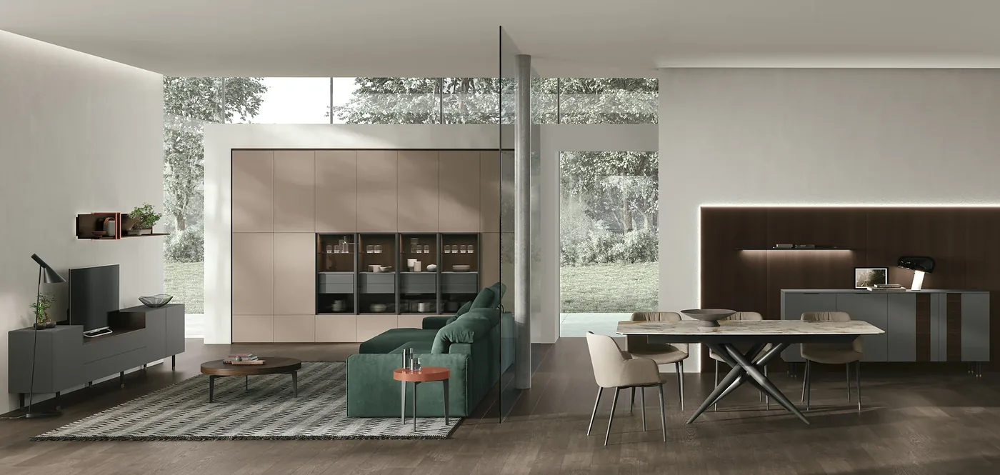

Conseils · Votre projet
Par où commencer quand on veut changer son intérieur ?
Parfois, tout part d’un trousseau de clés. Parfois, on est chez soi depuis vingt ans et, un soir, on se dit qu’on aimerait bien s’y sentir autrement. Qu’est-ce qui vous amène aujourd’hui ?

Qu’est-ce qui vous amène aujourd’hui ?
Photo Tomasella.
Cinq situations
Laquelle est la vôtre ?
-
J’ai envie de changement, mais j’aime encore mes meubles
Cette table, vous la garderiez dans n’importe quelle maison. Ce qui vous plaît moins, ce sont les six chaises assorties que vous aviez choisies avec elle. Empruntez un fauteuil ou une chaise à une autre pièce et installez-le en bout de table, juste pour un soir. Si la salle à manger vous plaît déjà davantage, vous avez trouvé par où commencer. Parfois, une paire de chaises suffit.
Quelles chaises avec ma table ? -
J’emménage. Qu’est-ce que j’achète en premier ?
Le soir du déménagement, on cherche de quoi faire le lit, on pose deux assiettes où l’on peut et on se promet de retrouver la cafetière pour demain. Faites une place à ces premiers gestes dans votre budget. Si une vieille table vous dépanne, gardez-la quelques semaines. En prenant vos premiers repas, vous découvrirez peut-être que vous préférez manger près de la fenêtre et garder le grand mur pour le canapé.
Mesurer sa pièce -
Je veux aménager toute ma maison
Imaginez un dimanche chez vous. Le café se prépare dans la cuisine pendant que quelqu’un lit au salon. À midi, la table s’ouvre. Où aimeriez-vous que tout cela se passe ? Sur le plan de la maison, placez d’abord la table, le canapé et les lits. Une fois ces repères posés, il devient plus facile de décider où ranger la vaisselle ou installer une lampe pour lire. Vous pouvez concevoir l’ensemble aujourd’hui et choisir les pièces au fil de votre budget. Chez FONY, le séjour Goliath s’est construit de cette façon : la console et son miroir ont rejoint la pièce dans un second temps.
-
On s’installe à deux, chacun avec ses meubles
Vous arrivez avec une bibliothèque foncée, l’autre avec un buffet en chêne clair. Avant de chercher comment assortir les bois, demandez-vous ce que chacun tient vraiment à retrouver en rentrant. Puis essayez les deux meubles à des endroits différents : le buffet près de la table, la bibliothèque auprès du fauteuil. Ils peuvent très bien trouver chacun leur place sans former un ensemble assorti.
-
Une chambre se libère. J’aimerais enfin en faire quelque chose pour moi
Vous avez envie d’y coudre, d’y lire au calme, mais aussi d’accueillir quelqu’un de temps en temps. Pensez à un mardi ordinaire. Si c’est ce jour-là que vous utiliserez la pièce le plus souvent, offrez la lumière de la fenêtre à votre table de couture ou à votre fauteuil. Dessinez ensuite la place d’un couchage ouvert pour les soirs où quelqu’un reste dormir.
Un canapé-lit pour tous les jours ?
Voir aussi
Continuer votre projet.
-
Nos réalisations
Des projets livrés chez nos clients.
Voir les réalisations -
Tous nos conseils
Une question, un guide.
Voir les conseils
Parlez-nous-en au magasin.
Montrez-nous d’abord le meuble que vous avez envie de garder, ou la pièce dans laquelle vous n’arrivez pas encore à vous projeter. Une photo sur votre téléphone suffit pour commencer la conversation.
- Lundi
- 13h30 – 18h30
- Mardi au samedi
- 10h30 – 18h30
- Dimanche
- Fermé
- Téléphone
- 064 46 07 72
- Livraison
- Par nos soins, dans le Hainaut (Binche, La Louvière, Mons, Charleroi…) et la province de Namur
Nous livrons aussi dans le nord de la France. Ailleurs, dont Bruxelles : sur demande.